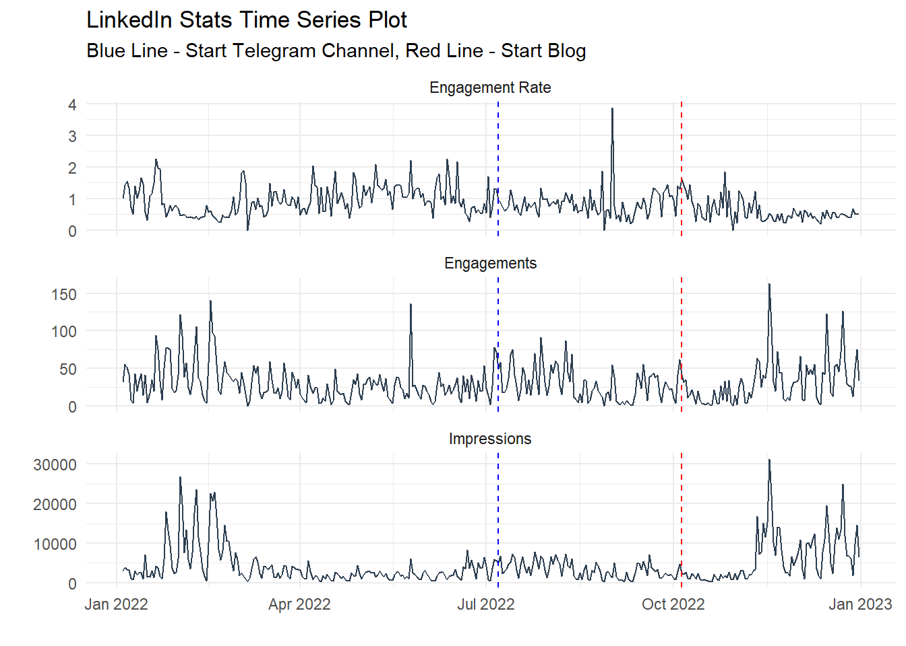
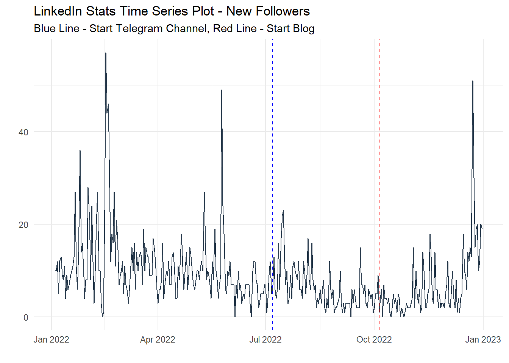
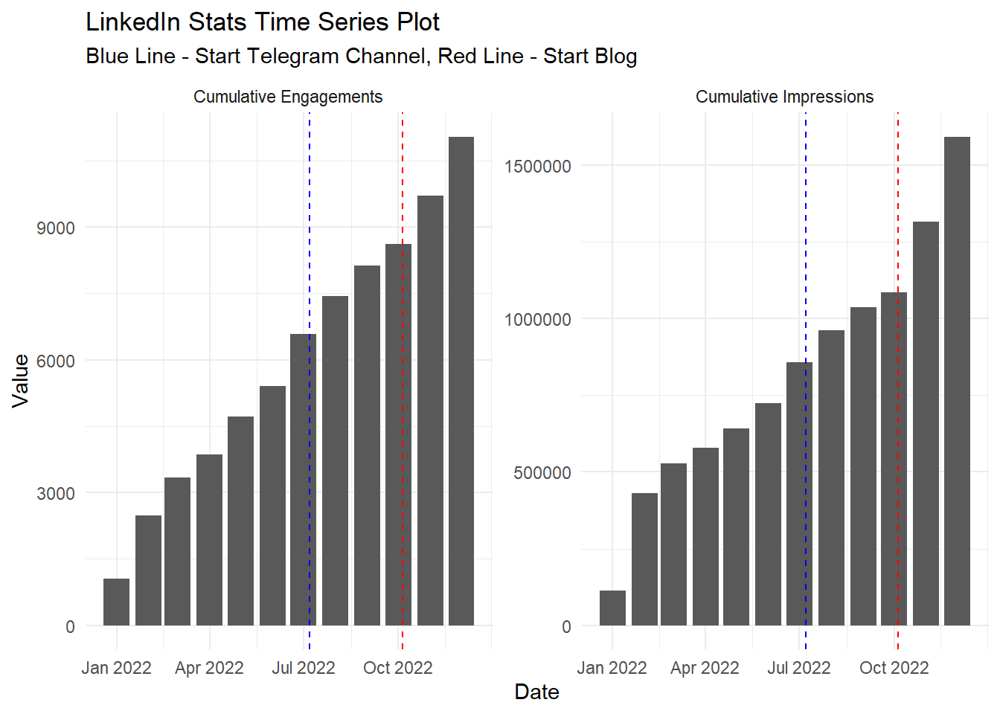
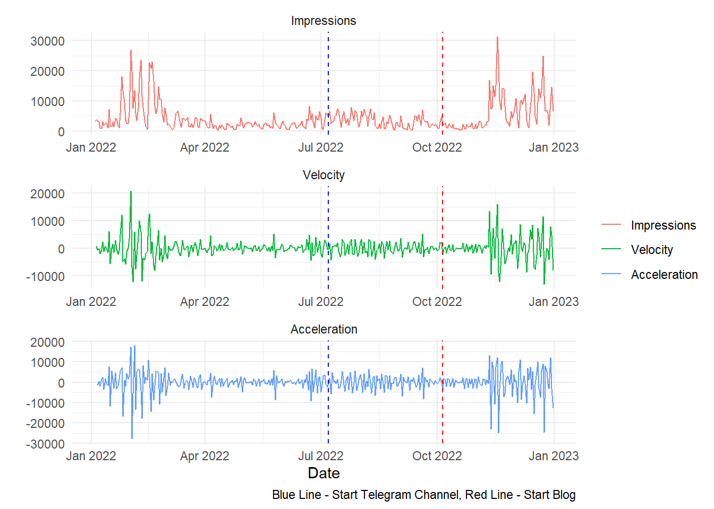
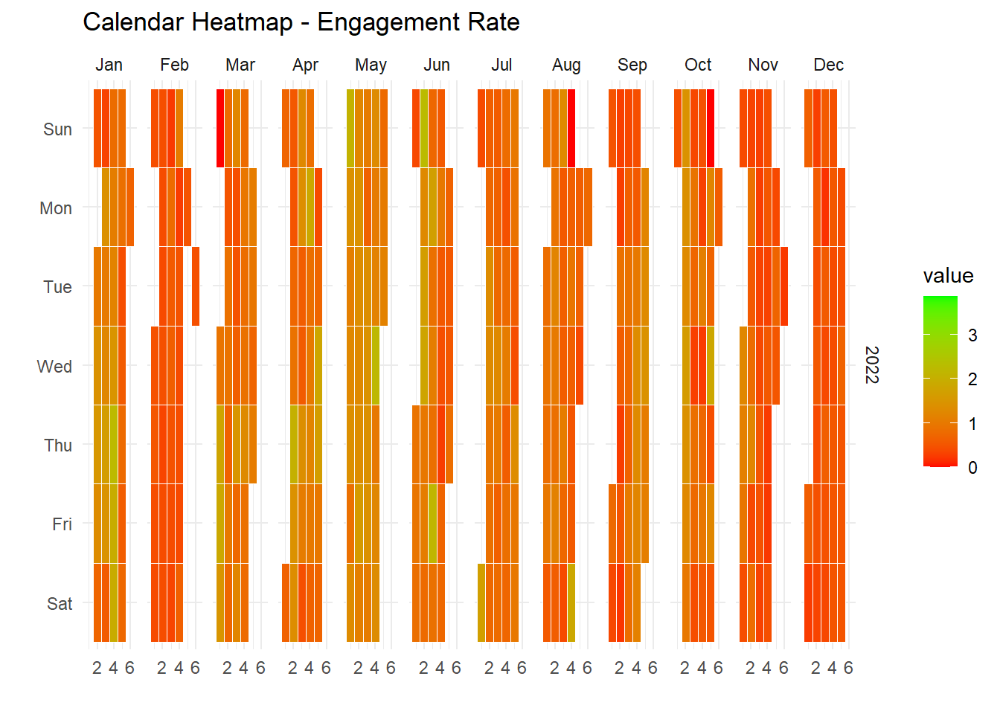
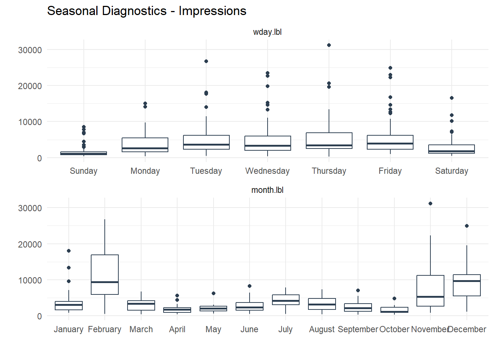
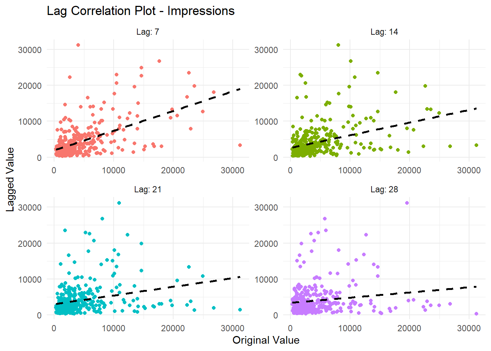
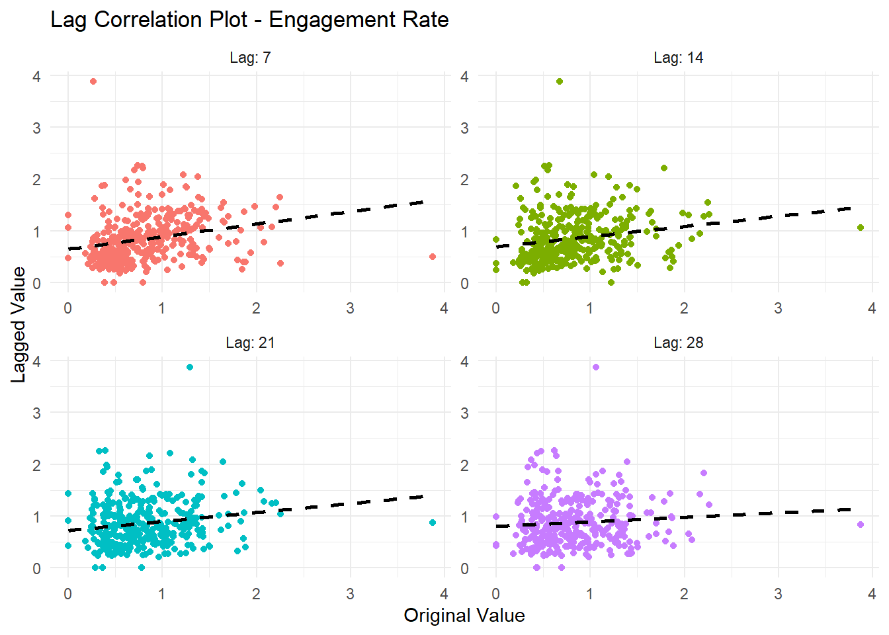

library(dplyr)
library(readxl)
library(lubridate)
library(timetk)
library(tidyr)
library(janitor)
library(stringr)
library(ggplot2)
library(healthyR.ts)
fp <- "linkedin_content.xlsx"
engagement_tbl <- read_excel(fp, sheet = "ENGAGEMENT") %>%
clean_names() %>%
mutate(date = mdy(date)) %>%
mutate(`Engagement Rate` = (engagements / impressions) * 100) %>%
filter_by_time(
.date_var = date,
.end_date = "2022-12-31"
)
top_posts_tbl <- read_excel(fp, sheet = "TOP POSTS", skip = 1) %>%
clean_names()
followers_tbl <- read_excel(fp, sheet = "FOLLOWERS", skip = 2) %>%
clean_names() %>%
mutate(date = mdy(date)) %>%
filter_by_time(
.date_var = date,
.end_date = "2022-12-31"
)
demographics_tbl <- read_excel(fp, sheet = "DEMOGRAPHICS") %>%
clean_names()Introduction
As we close the door on another year, it’s always a good time to look back and reflect on the past 12 months. And what better way to do that than with a LinkedIn Year in Review?
Whether you’re a job seeker, a business owner, or just someone who enjoys staying connected with their professional network, LinkedIn is an invaluable tool for staying up to date with the latest trends and opportunities in your field. And as we wrap up 2022, now is the perfect time to take a look at how you’ve been using LinkedIn and see where you can improve.
So what did your LinkedIn Year in Review have in store for you? Here are just a few of the things you might have seen:
- A summary of your activity on LinkedIn, including how many people you’ve connected with, how many posts you’ve shared, and how many likes, comments, and shares your content has received.
- A breakdown of the industries and job titles of the people you’ve connected with, which can give you a good idea of the types of people you’ve been spending the most time interacting with.
- A summary of your skills and endorsements, as well as which skills are most in demand in your industry.
All of these insights can be incredibly valuable as you start planning for the year ahead. With this information in hand, you can start looking for new opportunities, strengthening your existing relationships, and building new ones. And with the start of the new year, it’s a perfect time to set new goals and improve your LinkedIn profile.
If you haven’t yet checked out your LinkedIn Year in Review, don’t wait any longer! Log in to your account and take a look. And while you’re there, why not make a resolution to be more active on LinkedIn in the coming year? The more you put into your professional network, the more you’ll get out of it.
So let’s make the most of this new year, take advantage of the insights from your LinkedIn Year in Review, and make the most of your professional network. Here’s to a successful, connected, and productive 2023!
I have done a lot of work on this already, it is not comprehensive but it is enough to understand what is happening, and I used a lot of functionality from the {healthyverse}
Don’t forget you can also see my package and GitHub development wrap up on my year in review 2022
Analysis
I will do this in chunks, as it will be easier to digest. First of course you have to get your data. I am not going to go over this process as there are many a great link just a search away.
Let’s load in those libraries and read the files in.
Now let’s take a look at that data.
glimpse(engagement_tbl)Rows: 362
Columns: 4
$ date <date> 2022-01-04, 2022-01-05, 2022-01-06, 2022-01-07, 202…
$ impressions <dbl> 3088, 3911, 3303, 3134, 1118, 799, 3068, 1954, 2663,…
$ engagements <dbl> 31, 56, 51, 42, 8, 4, 43, 20, 33, 43, 14, 41, 5, 17,…
$ `Engagement Rate` <dbl> 1.0038860, 1.4318589, 1.5440509, 1.3401404, 0.715563…glimpse(top_posts_tbl)Rows: 50
Columns: 5
$ post_url_1 <chr> "https://www.linkedin.com/feed/update/urn:li:activity:6999…
$ engagements <dbl> 241, 136, 123, 117, 117, 115, 107, 106, 104, 104, 95, 81, …
$ x3 <lgl> NA, NA, NA, NA, NA, NA, NA, NA, NA, NA, NA, NA, NA, NA, NA…
$ post_url_4 <chr> "https://www.linkedin.com/feed/update/urn:li:activity:6999…
$ impressions <dbl> 52300, 33903, 30752, 29887, 25953, 24139, 23769, 18522, 18…glimpse(followers_tbl)Rows: 362
Columns: 2
$ date <date> 2022-01-04, 2022-01-05, 2022-01-06, 2022-01-07, 2022-01…
$ new_followers <dbl> 10, 10, 12, 5, 12, 13, 9, 8, 11, 4, 9, 6, 7, 9, 10, 11, …glimpse(demographics_tbl)Rows: 30
Columns: 3
$ top_demographics <chr> "Job titles", "Job titles", "Job titles", "Job titles…
$ value <chr> "Data Scientist", "Data Analyst", "Software Engineer"…
$ percentage <chr> "0.054587073624134064", "0.035217467695474625", "0.02…We are really only going to focus on the engagement_tbl and the followers_tbl as this is more of a time series analysis.
Ok, so let’s see how my Impressions, Engagements, and Engagement Rate have been.
engagement_tbl %>%
pivot_longer(cols = -date) %>%
mutate(name = str_to_title(name)) %>%
plot_time_series(
.facet_vars = name,
.value = value,
.date_var = date,
.interactive = FALSE,
.smooth = FALSE,
.title = "LinkedIn Stats Time Series Plot"
) +
geom_vline(xintercept = as.Date("2022-07-07"),
color = "blue", linetype = "dashed") +
geom_vline(xintercept = as.Date("2022-10-05"),
color = "red", linetype = "dashed") +
labs(
subtitle = "Blue Line - Start Telegram Channel, Red Line - Start Blog"
) +
theme_minimal()
followers_tbl %>%
plot_time_series(
.value = new_followers,
.date_var = date,
.interactive = FALSE,
.smooth = FALSE,
.title = "LinkedIn Stats Time Series Plot - New Followers"
) +
geom_vline(xintercept = as.Date("2022-07-07"),
color = "blue", linetype = "dashed") +
geom_vline(xintercept = as.Date("2022-10-05"),
color = "red", linetype = "dashed") +
labs(
subtitle = "Blue Line - Start Telegram Channel, Red Line - Start Blog"
) +
theme_minimal()
You will notice that I placed a blue line where I started my telegram channel @steveondata and a red line where I started this blog. So far, not bad, it looks like the telegram channel helped a little bit but writing on the blog seems to maybe been helping the most.
Let’s look at a cumulative view of things.
engagement_tbl %>%
summarise_by_time(
.date_var = date,
.by = "month",
`Cumulative Impressions` = sum(impressions),
`Cumulative Engagements` = sum(engagements)
) %>%
mutate(
`Cumulative Impressions` = cumsum(`Cumulative Impressions`),
`Cumulative Engagements` = cumsum(`Cumulative Engagements`)
) %>%
slice(1:12) %>%
pivot_longer(cols = -date) %>%
mutate(name = str_to_title(name)) %>%
ggplot(aes(x = date, y = value)) +
geom_col() +
facet_wrap(~ name, scales = "free") +
geom_vline(xintercept = as.Date("2022-07-07"),
color = "blue", linetype = "dashed") +
geom_vline(xintercept = as.Date("2022-10-05"),
color = "red", linetype = "dashed") +
labs(
x = "Date",
y = "Value",
title = "LinkedIn Stats Time Series Plot",
subtitle = "Blue Line - Start Telegram Channel, Red Line - Start Blog"
) +
theme_minimal() 
followers_tbl %>%
summarise_by_time(
.date_var = date,
.by = "month",
`Cumulative Followers` = sum(new_followers)
) %>%
mutate(
`Cumulative Followers` = cumsum(`Cumulative Followers`)
) %>%
slice(1:12) %>%
ggplot(aes(x = date, y = `Cumulative Followers`)) +
geom_col() +
geom_vline(xintercept = as.Date("2022-07-07"),
color = "blue", linetype = "dashed") +
geom_vline(xintercept = as.Date("2022-10-05"),
color = "red", linetype = "dashed") +
labs(
x = "Date",
y = "Value",
title = "LinkedIn Stats Time Series Plot - New Followers",
subtitle = "Blue Line - Start Telegram Channel, Red Line - Start Blog"
) +
theme_minimal() 
It seems again that writing blog posts and sharing them daily has a nice effect. Now we are going to look at some Value, Velocity, and Acceleration plots with the ts_vva_plot() function from the {healthyR.ts} package.
ts_vva_plot(engagement_tbl, date, engagements)$plots$static_plot +
geom_vline(xintercept = as.Date("2022-07-07"),
color = "blue", linetype = "dashed") +
geom_vline(xintercept = as.Date("2022-10-05"),
color = "red", linetype = "dashed") +
labs(caption = "Blue Line - Start Telegram Channel, Red Line - Start Blog")
ts_vva_plot(engagement_tbl, date, impressions)$plots$static_plot +
geom_vline(xintercept = as.Date("2022-07-07"),
color = "blue", linetype = "dashed") +
geom_vline(xintercept = as.Date("2022-10-05"),
color = "red", linetype = "dashed") +
labs(caption = "Blue Line - Start Telegram Channel, Red Line - Start Blog")
ts_vva_plot(engagement_tbl, date, `Engagement Rate`)$plots$static_plot +
geom_vline(xintercept = as.Date("2022-07-07"),
color = "blue", linetype = "dashed") +
geom_vline(xintercept = as.Date("2022-10-05"),
color = "red", linetype = "dashed") +
labs(caption = "Blue Line - Start Telegram Channel, Red Line - Start Blog")
ts_vva_plot(followers_tbl, date, new_followers)$plots$static_plot +
geom_vline(xintercept = as.Date("2022-07-07"),
color = "blue", linetype = "dashed") +
geom_vline(xintercept = as.Date("2022-10-05"),
color = "red", linetype = "dashed") +
labs(caption = "Blue Line - Start Telegram Channel, Red Line - Start Blog")
Now some simple moving average plots using the function ts_sma_plot() again from the {healthyR.ts} library.
ts_sma_plot(engagement_tbl, date, impressions, .sma_order = c(7, 14, 21, 30))$plots$static_plot +
theme(axis.text.x = element_blank()) +
geom_vline(xintercept = as.Date("2022-07-07"),
color = "blue", linetype = "dashed") +
geom_vline(xintercept = as.Date("2022-10-05"),
color = "red", linetype = "dashed") +
labs(caption = "Blue Line - Start Telegram Channel, Red Line - Start Blog")
ts_sma_plot(engagement_tbl, date, engagements, .sma_order = c(7, 14, 21, 30))$plots$static_plot +
theme(axis.text.x = element_blank()) +
geom_vline(xintercept = as.Date("2022-07-07"),
color = "blue", linetype = "dashed") +
geom_vline(xintercept = as.Date("2022-10-05"),
color = "red", linetype = "dashed") +
labs(caption = "Blue Line - Start Telegram Channel, Red Line - Start Blog")
ts_sma_plot(engagement_tbl, date, `Engagement Rate`, .sma_order = c(7, 14, 21, 30))$plots$static_plot +
theme(axis.text.x = element_blank()) +
geom_vline(xintercept = as.Date("2022-07-07"),
color = "blue", linetype = "dashed") +
geom_vline(xintercept = as.Date("2022-10-05"),
color = "red", linetype = "dashed") +
labs(caption = "Blue Line - Start Telegram Channel, Red Line - Start Blog")
ts_sma_plot(followers_tbl, date, new_followers, .sma_order = c(7, 14, 21, 30))$plots$static_plot +
theme(axis.text.x = element_blank()) +
geom_vline(xintercept = as.Date("2022-07-07"),
color = "blue", linetype = "dashed") +
geom_vline(xintercept = as.Date("2022-10-05"),
color = "red", linetype = "dashed") +
labs(caption = "Blue Line - Start Telegram Channel, Red Line - Start Blog")
Now some calendar heatmaps with ts_calendar_heatmap_plot()
ts_calendar_heatmap_plot(engagement_tbl, date, impressions, .interactive = FALSE) +
labs(title = "Calendar Heatmap - Impressions")
ts_calendar_heatmap_plot(engagement_tbl, date, engagements, .interactive = FALSE) +
labs(title = "Calendar Heatmap - Engagemets")
ts_calendar_heatmap_plot(engagement_tbl, date, `Engagement Rate`, .interactive = FALSE) +
labs(title = "Calendar Heatmap - Engagement Rate")
ts_calendar_heatmap_plot(followers_tbl, date, new_followers, .interactive = FALSE) +
labs(title = "Calendar Heatmap - New Followers")
Some seasonal diagnostics using {timetk}
plot_seasonal_diagnostics(engagement_tbl
, date, engagements, .interactive = FALSE,
.feature_set = c("wday.lbl", "month.lbl"),
.title = "Seasonal Diagnostics - Engagements") +
theme_minimal()
plot_seasonal_diagnostics(engagement_tbl
, date, impressions, .interactive = FALSE,
.feature_set = c("wday.lbl", "month.lbl"),
.title = "Seasonal Diagnostics - Impressions") +
theme_minimal()
plot_seasonal_diagnostics(engagement_tbl
, date, `Engagement Rate`, .interactive = FALSE,
.feature_set = c("wday.lbl", "month.lbl"),
.title = "Seasonal Diagnostics - Engagement Rate") +
theme_minimal()
plot_seasonal_diagnostics(
followers_tbl, date, new_followers, .interactive = FALSE,
.feature_set = c("wday.lbl","month.lbl"),
.title = "Seasonal Diagnostics - New Followers") +
theme_minimal()
Finally some lag correlation plots with ts_lag_correlation().
ts_lag_correlation(engagement_tbl, date, engagements, .lags = c(7, 14, 21, 28))$plots$lag_plot +
labs(title = "Lag Correlation Plot - Engagements") +
geom_smooth(se = FALSE, method = "lm", color = "black", linetype = "dashed")
ts_lag_correlation(engagement_tbl, date, impressions, .lags = c(7, 14, 21, 28))$plots$lag_plot +
labs(title = "Lag Correlation Plot - Impressions") +
geom_smooth(se = FALSE, method = "lm", color = "black", linetype = "dashed")
ts_lag_correlation(engagement_tbl, date, `Engagement Rate`, .lags = c(7, 14, 21, 28))$plots$lag_plot +
labs(title = "Lag Correlation Plot - Engagement Rate") +
geom_smooth(se = FALSE, method = "lm", color = "black", linetype = "dashed")
ts_lag_correlation(followers_tbl, date, new_followers, .lags = c(7, 14, 21, 28))$plots$lag_plot +
labs(title = "Lag Correlation Plot - New Followers") +
geom_smooth(se = FALSE, method = "lm", color = "black", linetype = "dashed")
Voila!